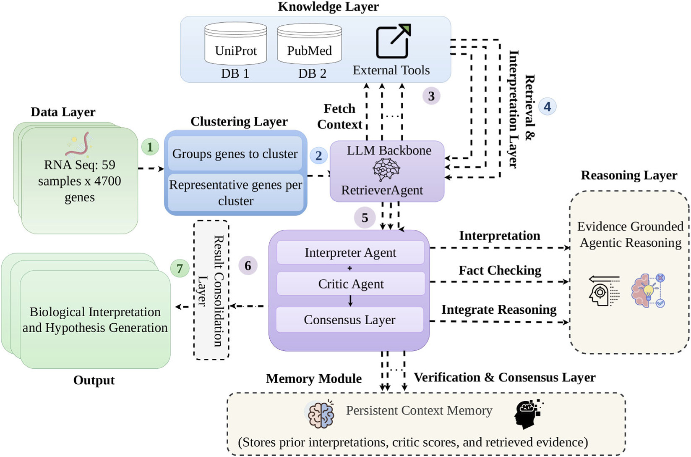

BIOGEN: Evidence-Grounded Multi-Agent Reasoning for Transcriptomic Interpretation
A multi-agent framework that turns RNA-seq gene clusters into cluster-level biological explanations, where every interpretation carries a traceable PubMed, DOI, or UniProt identifier and a confidence tier rather than an unsourced claim.
Standard enrichment analysis tells you which pathways are over-represented, not what a cluster means mechanistically. Asking a language model instead yields fluent mechanism, but with claims that cannot be traced to a source. BIOGEN sits between the two: it retrieves evidence first, interprets against that evidence, and then lets a panel of critics decide whether the interpretation is entitled to stand.

Figure 1. The BIOGEN pipeline. Gene-level clusters are enriched with PubMed and UniProt evidence, interpreted by the Interpreter Agent using a local open-source LLM, and evaluated by a panel of Critic Agents, producing transparent, literature-grounded outputs with data-adaptive evidence-tier labels. Figure reproduced from the paper under CC BY 4.0.
R
Retriever Agent
Queries PubMed and UniProt for each cluster's representative genes and assembles the evidence context the rest of the pipeline is allowed to reason over. Retrieval happens before interpretation, not as a citation added afterwards.
I
Interpreter Agent
Synthesizes a cluster-level explanation from the retrieved context using a local Mistral-7B backbone, so the full pipeline runs without sending transcriptomic data to a hosted model.
C
Critic Ensemble
Three reviewers score each interpretation from different angles: Evidence-Strict checks that claims are anchored to retrieved identifiers, Semantic checks biological coherence, and Adversarial probes for unsupported inference.
T
Confidence Tiers
Consensus critic scores map to High, Moderate, or Suggestive tiers using data-adaptive thresholds. Tier assignment is stable across p25/p75, p33/p66, and p40/p60 threshold settings (κ = 1.000).
Results
Grounding is what changes
The primary evaluation is on a Salmonella enterica RNA-seq dataset, measured by BERTScore, Semantic Alignment Score (SAS), KEGG functional similarity, and the rate of interpretations that carry no verifiable PMID, DOI, or UniProt accession. The LLM-only baseline leaves one interpretation in ten unverifiable; adding retrieval closes that gap, and the critic ensemble holds it closed.
System
BERTScore ↑
SAS ↑
KEGG Sim. ↑
Non-verifiable ID ↓
LLM only
—
—
—
0.100
LLM + retrieval
0.686
0.686
0.323
0.000
SimpleRAG
0.701
0.715
0.301
0.000
BIOGEN (full)
0.689
0.715
0.342
0.000
Table 1. Controlled evidence-grounding comparison on the primary S. enterica dataset. BIOGEN and SimpleRAG are close on surface similarity; the separation is in KEGG functional similarity, where BIOGEN's interpretations align best with independently computed pathway enrichment.
The stronger claim is robustness. The same clustering procedure, retrieval sources, backbone, and critic ensemble were applied to four further bacterial datasets spanning a change of organism and a change of experimental condition. Surface metrics degrade under shift, as expected. The grounding rate does not.
Dataset
Shift
BERTScore ↑
SAS ↑
Non-verifiable ID ↓
PRJEB67574
in-domain
0.689
0.715
0.000
GSE144604
cross-organism
0.715
0.504
0.000
GSE55197
cross-organism
0.699
0.195
0.000
GSE251671
cross-organism
0.561
−0.016
0.000
GSE224463
cross-condition
0.550
−0.003
0.000
Table 2. BIOGEN under distribution shift. Semantic alignment falls to near zero on the hardest cross-organism and cross-condition datasets, which is the honest reading: the interpretations get less specific. What survives is traceability, with no ungrounded output on any of the five datasets.
★
Against agentic baselines
In a controlled comparison against representative open-source agentic frameworks, BIOGEN was the only system with zero non-verifiable identifier outputs on all five datasets. The strongest baseline ranged from 0.100 to 0.800 on the same measure.
⇆
The trade is explicit
Those same baselines beat BIOGEN on BERTScore and SAS across all five datasets. Fluent, confident text scores well on surface similarity; the paper's position is that a claim you cannot trace is not worth the fluency.
⚖
Beyond enrichment
Compared against KEGG and GO over-representation analysis across organisms, BIOGEN produces mechanistic reading for clusters where enrichment returns no significant term, and complements rather than replaces the standard pipeline.
Data
Five public bacterial RNA-seq datasets
Every dataset is public. The primary set comes from the European Nucleotide Archive; the four shift datasets come from GEO and were selected for antimicrobial and stress-response relevance, gene-level count availability, and identifier compatibility with downstream annotation resources.
Primary dataset, 59 samples across roughly 4,700 genes, from a multi-omics investigation of S. enterica. Used for the main evaluation, all ablations, and the KEGG comparison.
192-sample time course over wild-type and ΔrpoS responses across stationary-phase transition, osmotic stress, and low temperature. The cross-condition shift case.
Transcriptomic compendium spanning 14 environmental conditions, including biofilm growth.
ⓘ
Open access. The paper is published under CC BY 4.0 in Frontiers in Bioinformatics and is also mirrored at PubMed Central (PMC13260171). Figure 1 on this page is reproduced from the article under the same licence.
Citation
Cite BIOGEN
If you find BIOGEN useful in your research, please consider citing the paper.
@article{hossain2026biogen,
title = {BIOGEN: evidence-grounded multi-agent reasoning framework for
transcriptomic interpretation in antimicrobial resistance},
author = {Hossain, Elias and Shoeibi, Mehrdad and Garibay, Ivan and Yousefi, Niloofar},
journal = {Frontiers in Bioinformatics},
volume = {6},
pages = {1846404},
year = {2026},
doi = {10.3389/fbinf.2026.1846404},
}